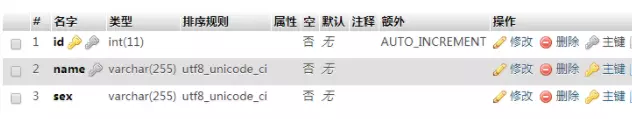
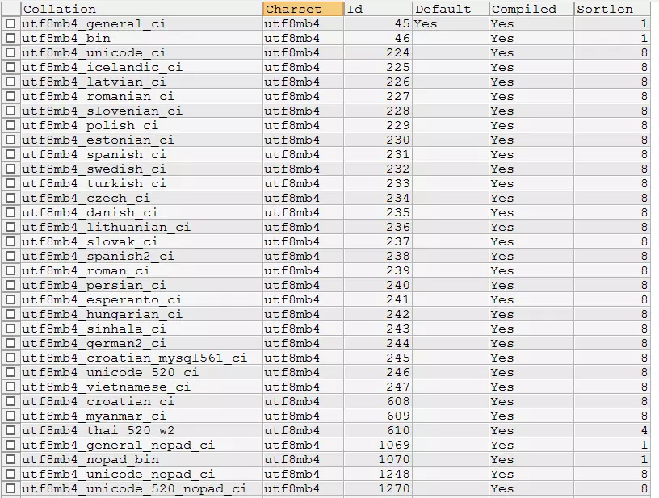

mysql 创建表的时候 COLLATE 干嘛的
在 mysql 中执行show create table <tablename>指令，可以看到一张表的建表语句，example 如下：
1 | CREATE TABLE table_name( |
复制代码大部分字段我们都能看懂，但是今天要讨论的是 COLLATE 关键字。这个值后面对应的 utf8_unicode_ci 是什么意思呢？面试的时候用这个题目考一考 DBA，应该可以难倒一大部分人。
COLLATE 是用来做什么的？
使用phpmyadmin的开发可能会非常眼熟，因为其中的中文表头已经给出了答案：

所谓 utf8_unicode_ci，其实是用来排序的规则。对于 mysql 中那些字符类型的列，如 VARCHAR，CHAR，TEXT 类型的列，都需要有一个 COLLATE 类型来告知 mysql 如何对该列进行排序和比较。
简而言之，COLLATE 会影响到 ORDER BY 语句的顺序，会影响到 WHERE 条件中大于小于号筛选出来的结果，会影响DISTINCT、GROUP BY、HAVING语句的查询结果。另外，mysql 建索引的时候，如果索引列是字符类型，也会影响索引创建，只不过这种影响我们感知不到。总之，凡是涉及到字符类型比较或排序的地方，都会和 COLLATE 有关。
各种 COLLATE 的区别
COLLATE通常是和数据编码（CHARSET）相关的，一般来说每种CHARSET都有多种它所支持的COLLATE，并且每种CHARSET都指定一种COLLATE为默认值。例如Latin1编码的默认COLLATE为latin1_swedish_ci，GBK编码的默认COLLATE为gbk_chinese_ci，utf8mb4编码的默认值为utf8mb4_general_ci。
这里顺便讲个题外话，mysql中有utf8和utf8mb4两种编码，在 mysql 中请大家忘记utf8，永远使用utf8mb4。这是 mysql 的一个遗留问题，mysql 中的 utf8 最多只能支持 3bytes 长度的字符编码，对于一些需要占据4bytes的文字，mysql 的 utf8 就不支持了，要使用 utf8mb4 才行。
很多COLLATE都带有_ci字样，这是Case Insensitive的缩写，即大小写无关，也就是说”A”和”a”在排序和比较的时候是一视同仁的。selection * from table1 where field1="a"同样可以把field1 为”A”的值选出来。与此同时，对于那些_cs后缀的COLLATE，则是Case Sensitive，即大小写敏感的。
在 mysql 中使用show collation指令可以查看到 mysql 所支持的所有COLLATE。以 utf8mb4 为例，该编码所支持的所有COLLATE如下图所示。

mysql 中和 utf8mb4 相关的所有 COLLATE
图中我们能看到很多国家的语言自己的排序规则。在国内比较常用的是utf8mb4_general_ci（默认）、utf8mb4_unicode_ci、utf8mb4_bin这三个。我们来探究一下这三个的区别：
首先utf8mb4_bin的比较方法其实就是直接将所有字符看作二进制串，然后从最高位往最低位比对。所以很显然它是区分大小写的。
而utf8mb4_unicode_ci和utf8mb4_general_ci对于中文和英文来说，其实是没有任何区别的。对于我们开发的国内使用的系统来说，随便选哪个都行。只是对于某些西方国家的字母来说，utf8mb4_unicode_ci会比utf8mb4_general_ci更符合他们的语言习惯一些.
general 是 mysql 一个比较老的标准了。例如，德语字母“ß”，在utf8mb4_unicode_ci中是等价于”ss”两个字母的（这是符合德国人习惯的做法），而在utf8mb4_general_ci中，它却和字母“s”等价。不过，这两种编码的那些微小的区别，对于正常的开发来说，很难感知到。本身我们也很少直接用文字字段去排序，退一步说，即使这个字母排错了一两个，真的能给系统带来灾难性后果么？从网上找的各种帖子讨论来说，更多人推荐使用utf8mb4_unicode_ci，但是对于使用了默认值的系统，也并没有非常排斥，并不认为有什么大问题。
结论：推荐使用utf8mb4_unicode_ci，对于已经用了utf8mb4_general_ci的系统，也没有必要花时间改造。
另外需要注意的一点是，从mysql 8.0开始，mysql 默认的CHARSET已经不再是 Latin1 了，改为了utf8mb4参考链接 10.5 Configuring Application Character Set and Collation，并且默认的COLLATE也改为了utf8mb4_0900_ai_ci。utf8mb4_0900_ai_ci大体上就是unicode的进一步细分，0900 指代 unicode 比较算法的编号（ Unicode Collation Algorithm version），ai 表示 accent insensitive（发音无关），例如 e, è, é, ê 和 ë 是一视同仁的。
What is the utf8mb4_0900_ai_ci Collation?
10.3.1 Collation Naming Conventions
COLLATE 设置级别及其优先级
设置COLLATE可以在实例级别、库级别、表级别、列级别、以及SQL 指定。
实例级别的COLLATE设置就是 mysql 配置文件或启动指令中的collation_connection系统变量。
库级别设置COLLATE的语句如下：
1 | CREATE DATABASE <db_name> DEFAULT CHARACTER SET utf8mb4 COLLATE utf8mb4_unicode_ci; |
如果库级别没有设置CHARSET和COLLATE，则库级别默认的CHARSET和COLLATE使用实例级别的设置。在 mysql8.0 以下版本中，你如果什么都不修改，默认的CHARSET是Latin1，默认的COLLATE是latin1_swedish_ci。从 mysql8.0 开始，默认的CHARSET已经改为了utf8mb4，默认的COLLATE改为了utf8mb4_0900_ai_ci。
表级别的COLLATE设置，则是在CREATE TABLE的时候加上相关设置语句，例如：
1 | CREATE TABLE ( |
复制代码如果表级别没有设置 CHARSET 和 COLLATE，则表级别会继承库级别的 CHARSET 与 COLLATE。
列级别的设置，则也在在CREATE TABLE中声明列的时候指定，例如
1 | CREATE TABLE ( |
复制代码如果列级别没有设置 CHARSET 和 COLATE，则列级别会继承表级别的 CHARSET 与 COLLATE。
最后，你也可以在写 SQL 查询的时候显示声明 COLLATE 来覆盖任何库表列的 COLLATE 设置，不太常用，了解即可：
1 | SELECT DISTINCT field1 COLLATE utf8mb4_general_ci FROM table1; |
如果全都显示设置了，那么优先级顺序是 SQL 语句 > 列级别设置 > 表级别设置 > 库级别设置 > 实例级别设置。也就是说列上所指定的 COLLATE 可以覆盖表上指定的 COLLATE，表上指定的 COLLATE 可以覆盖库级别的 COLLATE。如果没有指定，则继承下一级的设置。即列上面没有指定 COLLATE，则该列的 COLLATE 和表上设置的一样。
以上就是关于 mysql 的 COLLATE 相关知识。不过，在系统设计中，我们还是要尽量避免让系统严重依赖中文字段的排序结果，在 mysql 的查询中也应该尽量避免使用中文做查询条件。